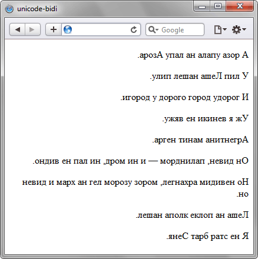

unicode-bidi
В европейских языках чтение текста происходит слева направо, в то время как есть языки, где текст читается справа налево. При смешении в одном документе разных по написанию символов (русского с ивритом, к примеру) в системе юникод, их направление определяется браузером из характеристик и содержимого текста. Свойства unicode-bidi и direction задают, как должен располагаться текст используемого языка.
Краткая информация
| Значение по умолчанию | normal |
|---|---|
| Наследуется | Нет |
| Применяется | Ко всем элементам |
Синтаксис
unicode-bidi: normal | embed | bidi-overrideЗначения
- normal
- Браузер самостоятельно определяет, как ему следует отображать текст на основе символов юникода.
- embed
- Переопределяет параметры текста, располагая его, как указано в свойстве direction.
- bidi-override
- Аналогичен embed, но при этом также меняется порядок символов в тексте, подчиняясь значению direction.
Пример
<!DOCTYPE html>
<html>
<head>
<meta charset="utf-8">
<title>unicode-bidi</title>
<style>
.rtl p {
unicode-bidi: bidi-override; /* Меняются характеристики текста */
direction: rtl; /* Текст пишется справа налево */
}
</style>
</head>
<body>
<div class="rtl">
<p>А роза упала на лапу Азора.</p>
<p>У лип Леша нашел пилу.</p>
<p>И городу дорог огород у дороги.</p>
<p>Уж я веники не вяжу.</p>
<p>Аргентина манит негра.</p>
<p>Он дивен, палиндром — и ни морд, ни лап не видно.</p>
<p>Но невидим архангел, мороз узором лег на храм и дивен он.</p>
<p>Леша на полке клопа нашел.</p>
<p>Я не стар брат Сеня.</p>
</div>
</body>
</html>Результат данного примера показан на рис. 1. Поскольку используется значение bidi-override свойства unicode-bidi, то порядок символов в тексте меняется на обратный. А именно на тот, что указан свойством direction. Заметьте, что текст располагается по правому краю окна, точка в предложении слева от текста.

Рис. 1. Результат использования unicode-bidi и direction
Объектная модель
Объект.style.unicodeBidi
Спецификация
| Specification | Status |
|---|---|
| CSS Writing Modes Module Level 3 | Рабочий проект |
| CSS Level 2 (Revision 1) | Рекомендация |
Браузеры
| Internet Explorer | Chrome | Opera | Safari | Firefox |
| 5.5 | 2 | 9.2 | 1.3 | 1 |
| Android | Firefox Mobile | Opera Mobile | Safari Mobile |
| 1 | 1 | 8 | 1.3 |